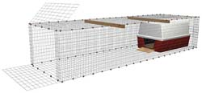

There are dozens of reasons to keep a few hens in your backyard, including pest control and sheer entertainment. Fresh eggs may be the most popular reason, and eggs from hens allowed to do what comes naturally - roam and peck at grasses, weed seeds and bugs - not only taste better, they’re better for you than eggs from cage-raised hens. Free-range eggs are higher in vitamin E and beta carotene, and lower in cholesterol. (Look for the exciting results of recent research in the October/November 2007 issue of Mother Earth News).
Keeping chickens should be fun and require little management. You don’t need to spend lots of money and time to get set up. You can let them out to range, and they will instinctively return to their roosts at dusk. Just be sure to keep them penned up for a few days before you let them range for the first time; it takes them awhile to learn where ‘home’ is.
If you’re thinking of a walk-in shed with a small outside run of barren earth, it’s time to change your thinking. There’s a better way to keep your hens. Instead of a traditional chicken shed, use a small moveable pen that allows chickens to eat bugs (ticks, grasshoppers, worms, fleas, etc.), grass (yes, chickens do eat grass and plants) and weed seeds. Let your chickens graze in the yard and move the pen every day or two. This creates a synergistic relationship - both the chickens and the lawn benefit.
Whatever coop style you choose, be sure it’s secure. Even in an urban environment, predators can be a serious problem. Dogs, cats and wild animals and raptors will help themselves to a free chicken dinner if you don't stop them. To get to your birds, predators will fly into, dig under or gnaw into any coop they can.
So you must plan to provide protection against predators. Chicken wire keeps your chickens in the coop, but it may not be strong enough to keep dogs or coyotes out. Heavier gauge mesh or woven wire are options to consider. Electric poultry netting (light and easily moved) is also a popular option to keep predators out and chickens in. A small doghouse inside a portable wire pen makes a great fortress for two to four hens. Click here for details on this low-cost option.
Most dogs can be trained not to bother chickens, and a dog’s presence will deter many chicken predators, too.
Keeping your birds dry is one of the main purposes of the coop. But don’t try to make the coop airtight to conserve heat. Stale, humid air is much worse for chickens than cold fresh air. Healthy, well-fed birds can tolerate cold conditions if they’re dry and out of the wind.
Be creative - your chickens don’t need a huge space to roost at night. Chain-link dog kennels can easily be converted to a small, easy to move coop. Greenhouses make a great home for chickens during winter months. Build some chicken ‘cabinets’ in the garage and use a pet door to let them outside. The space within the garage could be on the floor or elevated to take up less floor space (chickens will use a ramp to get in). But you’ll probably want the chickens’ area to be enclosed by more than just chicken wire - they tend to stir up a great deal of dust.
You can find detailed instructions for building a portable chicken mini-coop here and recommendations on selecting breeds here.
Looking for more detailed information? Mother Earth News offers two books about chicken coops. Click here.
Do you have more creative tips for others who want to raise chickens in the backyard? Post comments below.
|
 NATE SKOW A slightly remodeled plastic doghouse and a wire pen make a perfect home for two to four hens. |
|
|